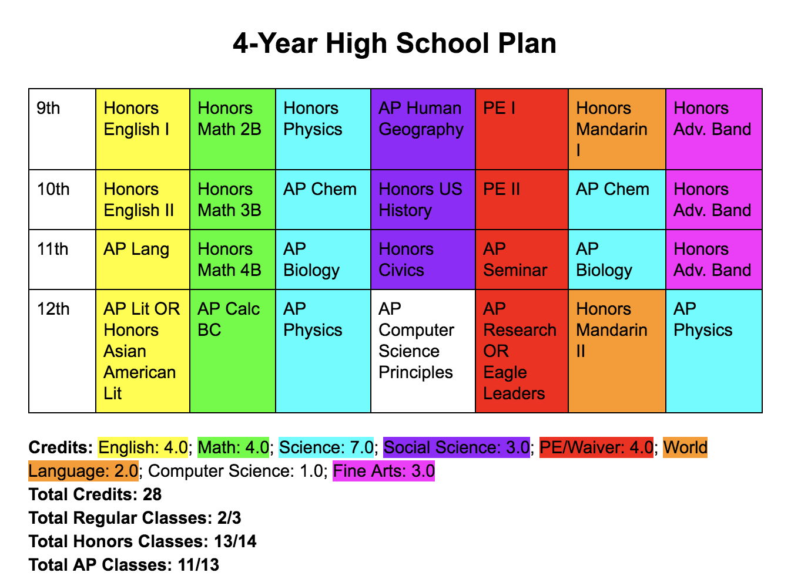

For both sophomore and junior year, and hopefully senior year as well, I have been an executive
board member of math team, as well as participating in contests throughout the year.
During my sophomore year, I, along with three friends, founded our own club. Weiqi, also known as
"Go", is a Chinese board game that relies solely on strategy. I, the Treasurer, manage purchase of
boards and game pieces, as well as snacks for every meeting!
We manage the recycling for the entire school, ensuring that people know what is recyclable and
what isn't.
During my freshman year, I was elected as the Treasurer for the class of 2020. Throughout the year,
I helped raise over $1000. I decided not to run again so I could focus on my studies, having decided
to take AP Chemistry my sophomore year.
Harry Potter has always been one of my series, and this club was the first one I joined. We discuss the
series and do activities related to it.
I auditioned for both the play and the musical my freshman year. During the play, She Kills Monsters,
I learned stage fighting, specifically fighting with swords. However, I did not get cast in the musical,
Fame (I've never been a great singer). In my sophomore year, I decided to not audition for the play as I
wanted to focus on my classes.
This is my current four-year plan throughout high school.
